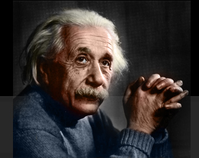

Tengo un miedo fastidioso a volar que ha ido creciendo con el tiempo y que sólo mi amor por viajar mantiene subyugado. He pensado mucho en ello y sé que, estadísticamente, estoy más o menos segura; más segura, dicen los que miden estas cosas, que en mi propio carro hacia el trabajo. Sin embargo, tener los pies sobre la tierra manda una señal de arraigo a mi cerebro que no la siento a más de diez mil metros de altura y sin una iota de control sobre el aparato que me transporta. Esta vulnerabilidad empuja mis neuronas a ubicarme en la trágica minoría que hace al azar tan “azaroso” y me obliga a incidir en conductas que avergüenzan a la escéptica ejecutiva de mi corteza prefrontal.
Por eso fue tan confortante y fenomenal leer el artículo de la bióloga Elizabeth Sherman en la revista Skeptical Inquirer (http://www.csicop.org/si/2009-02/sherman.html). Cada palabra de ese primer párrafo aceleraba mi corazón pues reconocía con dramática certeza lo que la investigadora describía. Me pareció aún más apasionante porque ella, como yo, es escéptica.
Pues, así es; yo también toco deliberadamente el fuselaje del avión al lado de la puerta cada vez que voy a entrar al aparato y, aunque sé que no tiene nada que ver con el mundo real, ya me es casi imposible no hacerlo. Una conducta irracional que me brinda irrelevante seguridad pues está basada en algo en lo que no creo. Me parece que no se puede ser más absurdo.
Si dos personas escépticas sucumbimos a este tipo de comportamiento, negándole tercamente la razón a la razón en un momento de lasitud, no debe sorprendernos las hazañas de las que son capaces creyentes cuyos cimientos están basados en leyes sobrenaturales que no se rigen de las que conocemos ni requieren de evidencias para convencer; sólo la fe. Este tipo de pensamiento ha generado desde el suicidio y el homicidio masivo hasta personas que permiten que sus hijos mueran porque su iglesia prohíbe algún tratamiento médico que los salvarían; cuando lo sobrenatural rige tu mundo, la realidad se puede convertir en un escenario desconcertante y sangriento.
El artículo de Sherman habla esencialmente sobre lo que ocurre cuando no le damos a la ciencia la razón, cuando le mostramos la espalda al conocimiento para continuar realzando conductas irracionales que sólo promueven sufrimiento. Es el caso del Papa actual que descarta el uso del condón en su gira por África, aparentemente insensible al sufrimiento creado por la ignorancia sobre la propagación del virus VIH; igualmente los problemas que origina el desconocimiento sobre la vacunación y sobre cómo funcionan las enfermedades que nos atacan. Llega a mi mente la automedicación rampante que existe en mi país, República Dominicana, basada en una mala información sobre el uso correcto de los medicamentos, uno de estos ejemplos, tan popular como alarmante, es el empleo de los antibióticos para combatir los virus.
Sherman asegura que en su país, Estados Unidos, gran parte de la ignorancia está erradicada en la negación de la teoría de la evolución, ya que comprender sus mecanismos revela con mayor claridad la estructura biológica de la vida sobre el planeta y hasta el tiempo de avance que ha tomado este asombroso proceso.
Para muchos, lo que la ciencia necesita es llegar a las masas con más emoción y mejores campañas de publicidad. Es el sentir de Jörn Hurum, el paleontólogo que presentó el fósil Ida, una estupendamente bien conservada monita parecida a un lemur y con características primates que él dice es ancestro directo de la especie humana. Ida (Darwinius masillae) vivió hace 47 millones de años, en la era del Eoceno y, para estas fechas, estoy segura de que casi todos los lectores de esta columna se ha informado sobre los detalles del descubrimiento. Si se encuentra usted en esa minoría que ni se enteró, a pesar de que Google cambió su diseño ese día en honor al fósil, no se preocupe que ya pronto se enterará si tiene televisión por cable, la gente en The History Channel está en eso.
Precisamente, uno de los conflictos que ha generado la presentación, con bombos y platillos, de Ida, ha sido el cuestionamiento de si debe la ciencia generar tanto ruido alrededor de estos hallazgos, especialmente cuando aún no han sido publicados los resultados del proceso de revisión por pares (peer review).
Hurum alega que los descubrimientos científicos no sólo apuntan hacia hallazgos espectaculares que deben excitar al televidente más pasivo, sino que enseñan, como reclama Sherman, formas contundentes de evitar más sufrimiento en la humanidad. Entonces, sería factible que no sólo se realizaran programas especializados en temas verificados sino que dentro de las telenovelas, en los anuncios comerciales y en los más esperados programas, se impartiera un poco de cómo realmente funcionan las cosas en el mundo real. No obstante, esta acción se enfrenta con duros problemas y uno de ellos es el odioso sensacionalismo, muchas veces desencadenado por la subestimación del televidente, lector, escucha y/o usuario.
En mi humilde opinión, la mayoría de los medios populistas asume que una población ignorante se aburrirá con las noticias científicas. No sé hasta dónde será esto cierto porque no he encontrado estadísticas que lo justifiquen, sí entiendo, trabajando por más de una década en medios escritos, que la mayoría de los editores desea “transformar”, “maquillar” o “hacer más digerible”, el material científico, como si el lector poseyese la capacidad receptiva de una cucaracha.
Es aquí donde nacen varias complicaciones. Esa mañana en el trabajo, cuando mi cursor presionó sobre la imagen de Ida en el logo de Google, los titulares que encontré sobre aquella página virtual casi me matan de la angustia. La mayoría usaba la palabra “confirmar” como protagonista, como si la Teoría de la Evolución pudiese haber cambiado espontáneamente debido a la aparición de un fósil. Esta idea, junto a frases como “el santo grial de la evolución”, “el tan buscado eslabón perdido”, me pusieron los pelos de punta, la ignorancia detrás de estos titulares todavía me deja pasmada.
Sabía que escucharía reacciones por toda la redacción aquel día; ¡imagínense!, la imagen estaba en Google y nadie que yo conozca usa Yahoo!, mucho menos Ask o aquel de Microsoft. Pero lo peor, como es usual, me atrapó desapercibida. Al tratar de explicar que el fósil podría ser más importante de lo que pensamos pero que ya la teoría hace mucho que ha estado confirmada, mis interlocutores respondían con comentarios que más o menos indicaban: “ah, ya sabía yo que no era como ellos decían”, algo que me dejaba con la virulenta sospecha de que mis palabras ya estaban siendo malinterpretadas.

Creo que la generalidad de los medios populares no está haciendo un buen trabajo con la divulgación científica y la mayoría sucumbe a reportar descubrimientos de forma errónea con el objetivo de llamar la atención; un pecado capital. Lo ideal sería detener esa subestimación del cerebro colectivo de las masas y presentar la verdad con todas sus implicaciones y, si añadimos un poco de creatividad, se puede acompañar el tema con un buen sorbo de amenidad.
A lo mejor con el tiempo (y con una dosis letal de optimismo), esas conductas, que a veces pueden ser tan absurdas como peligrosas, se transformen en supersticiones inocuas, residuos de impulsos primitivos que formarán parte de un catálogo personal para la seguridad ilusoria de cada cual; conductas que, nos avergüence o no reconocerlas, nunca causarán sufrimiento ni muerte en la vida de los demás; la lógica y la razón las colocarán en su válido lugar dentro de la red neuronal, en esa irrisoria región cerebral que yo llamo, “mis ridiculeces”.
La ciencia no debe ser elitista
Una mala reputación
Uno de los más gratificantes elogios que he recibido tiene que ver con la divulgación científica. Lectores me han comentado que he logrado interesarlos en algún material que para ellos resultaba “complejo”. Por mi parte, creo que esta noción está arraigada en un meme que le ha dado a la ciencia esa mala reputación. Existe esta idea de que estos temas son complicados y de entrada se teme no comprender de lo que se trata.
Es probable que esta aprensión haya sido sembrada de distintas maneras, no sólo porque nuestra especie, con un intenso pasado y presente religioso, se ha empeñado en obstaculizar el trabajo de los científicos por miedo a las consecuencias que los resultados acarreen, sino porque en su mismo desprestigio se han fortalecido creencias que gestionan poder y dinero; dioses incuestionables del quehacer humano. Y por supuesto que existe un sinnúmero de temas que yo no logro entender, pero no pongo en duda la capacidad de una persona especializada en explicarme cada uno de ellos. Es probable que, por lo menos, capte la generalidad del asunto.
Entiendo también que conocer sobre los mecanismos que rigen el mundo resta credibilidad a los libros sagrados que intentan dirigir el pensamiento homo sapiens, aún así, debe haber una forma de enseñar la ciencia correctamente sin negar la existencia de los dioses. Yo no tengo esa respuesta porque hasta el momento no la he necesitado, pero comprendo que gran parte del mundo allá afuera delibera de forma muy distinta a la ideología que rige mi hogar.
No obstante, mientras nos empeñemos en conferirles veracidad a esos patrones que a nuestros cerebros les encanta engendrar con el fin de concedernos esa ilusoria seguridad que tanto nos gusta, continuaremos esclavizados a enunciaciones sin sentido, atribuyéndole a la casualidad planes que desconoce porque ninguno existe. Peor aún, la desinformación, plaga de siempre, pandemia de estos tiempos, continuará propagando sufrimientos innecesarios si no la detenemos a tiempo. Para ello habrá que derrumbar tantas agendas personales que tan sólo de pensarlo ya me duele la cabeza.
Por el momento, me parece que es preciso que los medios actuales intenten ser más escépticos respecto a los artículos que publican, pues, como bien lo expresó Albert Einstein en esta cita que Sherman también utiliza apropiadamente en su artículo: “Toda nuestra ciencia, comparada con nuestra realidad, es primitiva e infantil; y, aún así, es la cosa más preciosa que poseemos”.
Lo mínimo que podemos hacer es proporcionarle nuestro respeto y no malinterpretar sus resultados.
Volver al índice de la Lupa Herética
© 2008-2023 Glenys Álvarez y Sin Dioses. Prohibida la reproducción con fines comerciales.
Comentarios
Comments powered by Disqus